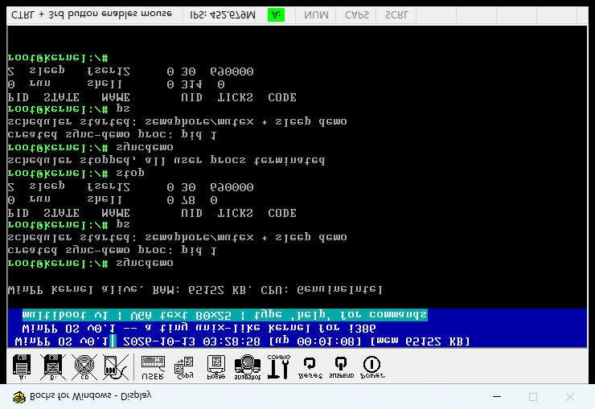

一句话意义：程序不再"抢着干活"，而是学会排队和睡觉——sleep 让进程主动睡一会儿、醒来自动继续；信号量/互斥锁 让多个进程抢同一个资源时一个进、另一个等，绝不同时挤进去。全部 Bochs 实机 + 串口 + 截图验证通过，互斥违规 = 0。
| 调用 | 作用 |
|---|---|
| 17 sleep(ticks) | 进程睡眠指定 ticks（1 tick=0.01s），让出 CPU，到期自动醒来 |
| 18 sem_create(value) | 创建信号量（value 张通行证），返回 id |
| 19 sem_wait(id) | P 操作：拿一张通行证；没有则阻塞排队（FIFO） |
| 20 sem_signal(id) | V 操作：放回一张，唤醒队首等待者 |
| 21 mutex_create() | 创建互斥锁（=初值 1 的信号量），返回 id |
| 22 mutex_lock(id) | 加锁：拿钥匙，拿不到就排队 |
| 23 mutex_unlock(id) | 解锁：交回钥匙，唤醒队首 |
| syncdemo | shell 命令：启动 user12 同步演示（互斥锁 + sleep） |
[sync] demo proc pid 1 [sem] create sem0 value=1 # 互斥锁 = 初值 1 的信号量 [sched] pid2 sleep 60 (tick=1704 wake=1764) # C1 睡觉 60 ticks [pid3] C2 IN # C2 拿到锁，连进 3 轮 [pid3] C2 OUT [sched] pid2 wake (tick=1764) # 60 ticks 后 C1 准时醒来 [pid2] C1 slept # 睡醒报告 [sem] wait sem0 pid2 block (q=1) # C1 想进临界区，但 C2 占着 → 排队！ [sem] signal sem0 pid3 handoff wake pid2 # C2 释放 → 直接把锁交给 C1 [pid2] C1 IN ... [pid2] C1 OUT
[pid3] C2 IN # C2 进 [pid3] C2 OUT # C2 出（中间 sleep 20 ticks 占用） [pid2] C1 IN # C1 进（只有 C2 交出锁之后） [pid2] C1 OUT [pid3] C2 IN ... # 严格交替，绝无 "IN 后紧跟另一个 IN"
PID STATE NAME UID TICKS CODE
0 run shell 0 ... 0
1 sleep fuser1 0 ... 690000 # 睡眠中的进程（截图取证）

第一版 sem_signal 先 value++ 再唤醒等待者：C2 释放后 C1 被唤醒，但 C2 下一轮 wait 抢先把 v 拿走，C1 醒来误以为拿到锁 → 两个进程同时进临界区（实测抓到 1 次违规）。修复：有等待者时 V 不增 v、直接把锁"交接"给队首进程（handoff），防止抢占。修复后 16 次进出零违规。